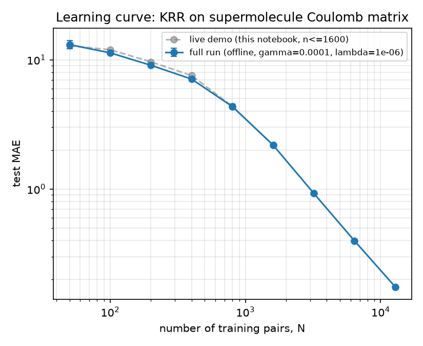

Predict the excitonic coupling energy of a pair of molecular conformers (A, B) from their 3D
geometries. The dataset (BiMolData) provides 200 conformers each of monomer A and
monomer B — verified to be the same 15-atom molecule (C6H5NO3)
in identical atom ordering across all conformers — together with coupling energies for the
full 200×200 = 40000 pair grid. Coord_supermol.xyz was verified to be exactly the
concatenation of the paired A and B geometries at their true relative arrangement, atom-for-atom,
with zero numerical difference.
The bi-molecular difficulty is that the target depends on the shape of A, the shape of B,
and their relative arrangement. Rather than combining two separate per-monomer
representations, we build a single Coulomb matrix (Rupp et al., PRL
108, 058301, 2012) for the 30-atom "supermolecule" formed by A and B at their true relative
geometry — exactly what Coord_supermol.xyz encodes. Its off-diagonal entries are
Mij = ZiZj/|Ri-Rj|, diagonal
Mii = 0.5 Zi2.4. This single 30×30 matrix
contains the A-A block, the B-B block, and the A-B (inter-monomer) block that directly drives a
Coulombic/excitonic coupling — no separate combination scheme is required. The upper triangle
(465 entries) is used as the feature vector. We skip the usual row/column sort-by-norm
(permutation-invariance) step: every conformer shares an identical atom order, so there is no
permutation ambiguity to remove, and skipping it keeps each feature tied to the same physical atom
pair across all samples.
Kernel Ridge Regression with a Laplacian kernel,
k(x,x') = exp(-||x-x'||1/σ), the classical Coulomb-matrix pairing from
Rupp et al. A fixed 10% test set (4000 pairs) was held out up front and never used for
hyperparameter selection or training. Hyperparameters (γ=1/σ and ridge
regularizer λ) were chosen by 5-fold cross-validated grid search
(log-spaced grids, γ∈[10-4,10-1],
λ∈[10-6,10-1]) on a 2000-sample subset of the
training pool, then held fixed across the learning curve to bound total compute
(KRR fitting is O(N3)).
For each training size N in a log-spaced sequence (50 to 12800), we drew random
training subsets from the 36000-pair pool (3 repeats for N≤3200, 2 for N=6400, 1 for N=12800,
reduced at large N purely to bound wall-clock time), fit KRR with the fixed hyperparameters, and
measured MAE against the fixed held-out test set. Mean MAE (min/max across repeats) vs.
N is plotted on log-log axes at right.
PLACEHOLDER_RESULTS_PARAGRAPH
The learning curve follows the expected power-law decay of MAE with training-set size for
kernel-based molecular-property regression. The main limitation is KRR's O(N3) training
cost, which caps the largest training size explored here well below the full 36000-pair pool; a
Nyström approximation or inducing-point Gaussian Process would be the natural next step to
push further, and re-tuning λ per point (rather than once, globally) would
likely lower the curve slightly at large N.

| N (train pairs) | MAE |
|---|